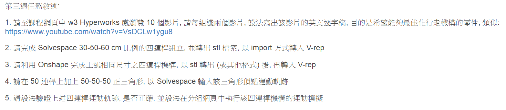
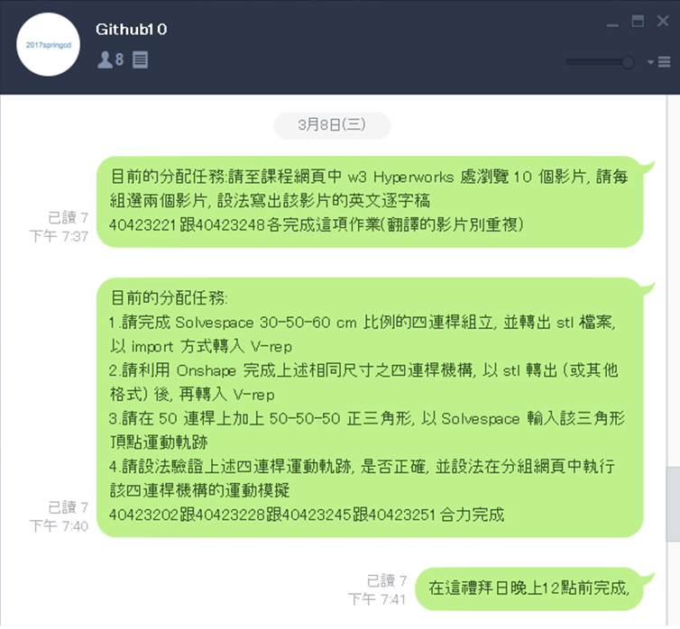
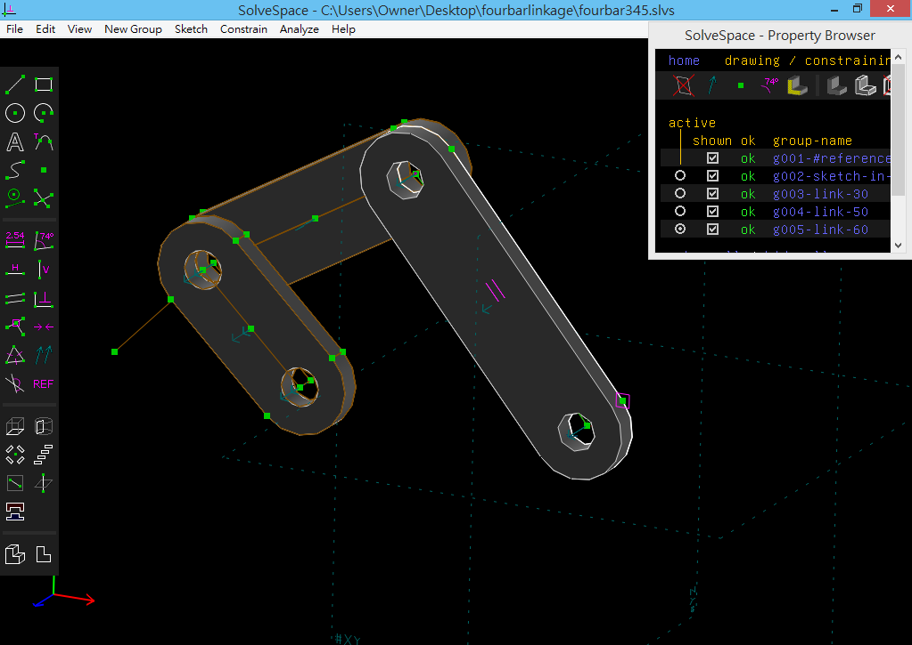

<!doctype html>
<html lang="en">
<head>
    <meta charset="utf-8">
<title>
2017 Spring 機械設計工程系協同產品設計實習
</title>
    <meta name="description" content="A framework for easily creating beautiful presentations using HTML">
    <meta name="author" content="Hakim El Hattab">
    
    <meta name="apple-mobile-web-app-capable" content="yes">
    <meta name="apple-mobile-web-app-status-bar-style" content="black-translucent">
    
    <meta name="viewport" content="width=device-width, initial-scale=1.0, maximum-scale=1.0, user-scalable=no">
    
    <link rel="stylesheet" href="https://cad-lab.github.io/cadlab_data/reveal/css/reveal.css">
    <link rel="stylesheet" href="https://cad-lab.github.io/cadlab_data/reveal/css/theme/black.css" id="theme">
    
    <!-- Theme used for syntax highlighting of code -->
    <link rel="stylesheet" href="https://cad-lab.github.io/cadlab_data/reveal/lib/css/zenburn.css">

    <!-- Printing and PDF exports -->
    <script>
        var link = document.createElement( 'link' );
        link.rel = 'stylesheet';
        link.type = 'text/css';
        link.href = window.location.search.match( /print-pdf/gi ) ? 'https://cad-lab.github.io/cadlab_data/reveal/css/print/pdf.css' : 'https://cad-lab.github.io/cadlab_data/reveal/css/print/paper.css';
        document.getElementsByTagName( 'head' )[0].appendChild( link );
    </script>

    <!--[if lt IE 9]>
    <script src="https://cad-lab.github.io/cadlab_data/reveal/lib/js/html5shiv.js"></script>
    <![endif]-->
</head>

<body>
<div class="reveal">
<!-- Any section element inside of this container is displayed as a slide -->
<div class="slides">
<section data-markdown>
    <script type="text/template">
## <a href="https://github.com/40423222/2017springcd_bg7">2017Springcd_bg7</a> 
#協同產品設計實習

<small>
Created by [40423222](https://github.com/40423222)
</small>

[組員名單](https://github.com/40423222/2017springcd_bg7/wiki#wait)


    </script>
</section>


						
<section data-markdown>
    <script type="text/template">
# 投影片快捷鍵

* 利用箭頭上下前後換頁
* 按 f 鍵進入全螢幕模式 (full screen)
* 按 s 鍵可以顯示投影片筆記 (show)
* 按 o 鍵可以切換單張或全域檢視 (overview)
* 按 b 或 . 鍵可以切換螢幕黑屏 (black)
* 按 Esc 可以退出全螢幕或全域檢視 (Escape)

    </script>
</section>


						
<section>
<section data-markdown>
    <script type="text/template">
<!-- 請注意, @others 不可以內縮 -->
# 數學符號與方程式

Inline math equations go in like so: $\omega = d\phi / dt$. Display
math should get its own line and be put in in double-dollarsigns:

$$I = \int \rho R^{2} dV$$
    </script>
</section>


						
<section data-markdown>
    <script type="text/template">
<!-- 請注意, @others 不可以內縮 -->
## 利用 Markdown 寫投影片
以下利用 Markdown 格式展示 Python 程式碼:
```
# use threading and subprocess to threading the make process
import os
import subprocess
import threading

def domake():
    
    path = "../exposed/api/exposed"
    ubuntu = "../Ubuntu"
    
    # create obj path
    
    if not os.path.exists(path+"/../obj"):
        os.makedirs(path+"/../obj")
    
    subprocess.call(["make", "clean"], cwd=path)
    subprocess.call("make", cwd=path)
    subprocess.call(["cp", "{libslvs.so, _slvs.so, slvs.py}", ubuntu], cwd=path)
    subprocess.call(["python3", "circle_ex.py"], cwd=path+"/"+ubuntu)
    
make = threading.Thread(target=domake)
make.start()
```
    </script>
</section>


						
<section data-markdown>
    <script type="text/template">
## 使用 iframe 導入影片

### 導入影片 template

<iframe src="https://player.vimeo.com/video/183950627" width="640" height="492" frameborder="0" webkitallowfullscreen mozallowfullscreen allowfullscreen></iframe>
    </script>
</section>


						
</section>
<section>
<section data-markdown>
    <script type="text/template">
<!-- 請注意, @others 不可以內縮 -->
#W3-Homework

<a href="https://mde2a1.kmol.info/wiki?name=2017springcd"></a>

點擊圖片進入mde2a1/2017springcd
    </script>
</section>


						
<section data-markdown>
    <script type="text/template">
<!-- 請注意, @others 不可以內縮 -->
#分配工作



分兩小組製作
    </script>
</section>


						
<section data-markdown>
    <script type="text/template">
# 英文影片
(Copy 40423221 and 40423245)


    </script>
</section>


						
<section data-markdown>
    <script type="text/template">
#四連桿 
(Copy 40423228 and 40423245)


    </script>
</section>


						
<section data-markdown>
    <script type="text/template">
#四連桿-Onshape
(Copy 40423228 and 40423245)


<a href="https://cad.onshape.com/documents/8a40a446a6e3a930313e8ca4/w/b9aa548914cf88a0a506e817/e/6f45645181ba9446e1398078">四連桿-Onshape</a>
    </script>
</section>


						
<section data-markdown>
    <script type="text/template">
#運動軌跡
(Copy 40423228 and 40423245)


    </script>
</section>


						
<section data-markdown>
    <script type="text/template">
#驗證軌跡
(Copy 40423245)


    </script>
</section>


						
<section data-markdown>
    <script type="text/template">
##影片(vimeo)

英文影片:

hyperworks 14 4:(<a href="https://vimeo.com/208321312">英</a>,<a href="https://vimeo.com/208321345">中</a>)文,<a href="https://vimeo.com/208321328">中英文</a> 

hyperworks 14 5:(<a href="https://vimeo.com/208321230">英</a>,<a href="https://vimeo.com/208321256">中</a>)文,<a href="https://vimeo.com/208321297">中英文</a>

四連桿:
<a href="https://vimeo.com/206935307">40423228</a> and <a href="https://vimeo.com/207629426">40423245</a>

四連桿-Onshape:

40423228:<a href="https://vimeo.com/207404520">part30</a>,<a href="https://vimeo.com/207404544">part50</a>,<a href="https://vimeo.com/207404550">part60</a>,<a href="https://vimeo.com/207928838">Assembly</a> and <a href="https://vimeo.com/207626453">40423245</a>

運動軌跡:
<a href="https://vimeo.com/208069152">40423228</a> and <a href="https://vimeo.com/207920094">40423245</a>

驗證軌跡:
<a href="https://vimeo.com/207920094">40423245</a>
    </script>
</section>


						
<section data-markdown>
    <script type="text/template">
#問題(要改進)

1.發生一個人完成全部工作的問題

2.多名組員沒動力製作作業

3.02跟51投影片有問題

4.沒分配好每個人該製作的部分

5.沒製作W1跟W2
    </script>
</section>


						
<section data-markdown>
    <script type="text/template">
#講解

關於這周的各種檔案我會放到data/W3內
想要了解自行去觀看
    </script>
</section>


						
<section data-markdown>
    <script type="text/template">
# 心得

1.找人去幫落後的組員

2.將工作分配的更仔細明確

3.補上W1 and W2
    </script>
</section>


						
</section>
</div>

</div>

<script src="https://cad-lab.github.io/cadlab_data/reveal/lib/js/head.min.js"></script>
<script src="https://cad-lab.github.io/cadlab_data/reveal/js/reveal.js"></script>
<script>
        // More info https://github.com/hakimel/reveal.js#configuration
        Reveal.initialize({
            controls: true,
            progress: true,
            history: true,
            center: true,

            transition: 'slide', // none/fade/slide/convex/concave/zoom

            // More info https://github.com/hakimel/reveal.js#dependencies
            dependencies: [
                { src: 'https://cad-lab.github.io/cadlab_data/reveal/lib/js/classList.js', condition: function() { return !document.body.classList; } },
                { src: 'https://cad-lab.github.io/cadlab_data/reveal/plugin/markdown/marked.js', condition: function() { return !!document.querySelector( '[data-markdown]' ); } },
                { src: 'https://cad-lab.github.io/cadlab_data/reveal/plugin/markdown/markdown.js', condition: function() { return !!document.querySelector( '[data-markdown]' ); } },
                { src: 'https://cad-lab.github.io/cadlab_data/reveal/plugin/highlight/highlight.js', async: true, callback: function() { hljs.initHighlightingOnLoad(); } },
                { src: 'https://cad-lab.github.io/cadlab_data/reveal/plugin/zoom-js/zoom.js', async: true },
                { src: 'https://cad-lab.github.io/cadlab_data/reveal/plugin/notes/notes.js', async: true },
                { src: 'https://cad-lab.github.io/cadlab_data/reveal/plugin/math/math.js', async: true }
            ]
        });
</script>
</body>
</html>

